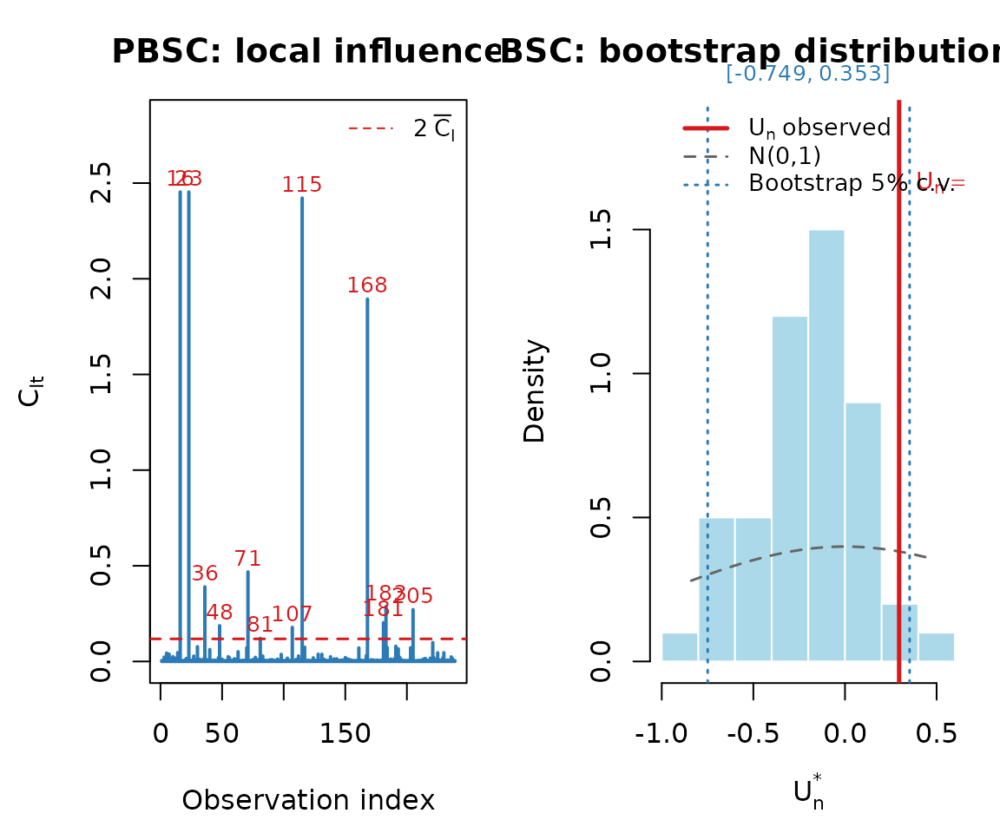
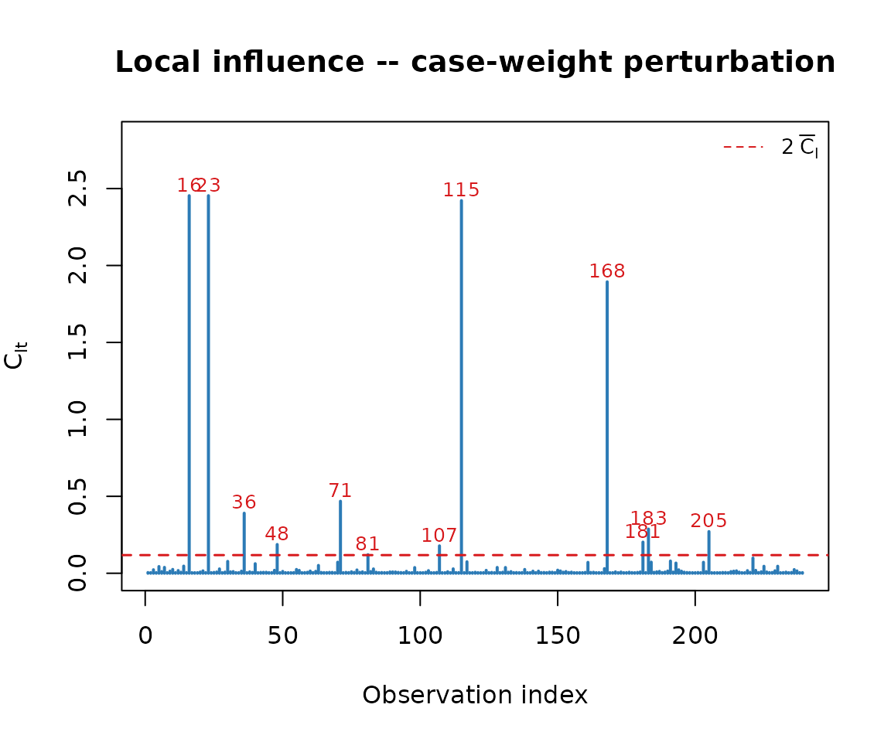
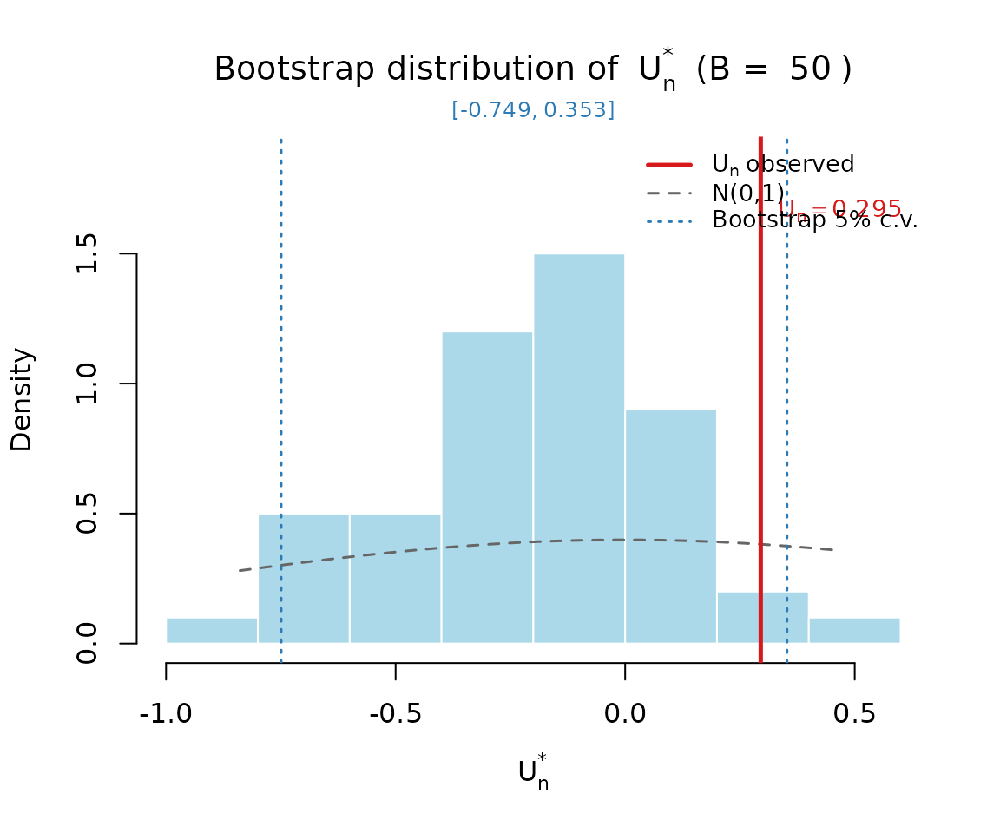

The PBSC application
This article reproduces the peripheral blood stem cell (PBSC)
transplantation application from the companion methodological paper
(Ospina, Espinheira, Silva and Barros, 2026), using the
pbsc dataset (Edmonton Hematopoietic Institute - Alberta
Health Services).
The response recovery is the CD34+ cell recovery rate, a
continuous proportion in
.
The constant-dispersion model used in paper_pbsc() is
where adj_age is the adjusted patient-age variable and
chemo is the chemotherapy protocol indicator (0 = one-day,
1 = three-day protocol).
The data
data(pbsc)
head(pbsc)
#> recovery adj_age chemo
#> 1 0.75 22 0
#> 2 0.83 0 1
#> 3 0.94 3 1
#> 4 0.86 18 0
#> 5 0.54 3 0
#> 6 0.70 11 1
summary(pbsc)
#> recovery adj_age chemo
#> Min. :0.4000 Min. : 0.00 Min. :0.0000
#> 1st Qu.:0.7250 1st Qu.: 4.00 1st Qu.:0.0000
#> Median :0.8000 Median :16.00 Median :0.0000
#> Mean :0.7907 Mean :13.77 Mean :0.4561
#> 3rd Qu.:0.8700 3rd Qu.:22.00 3rd Qu.:1.0000
#> Max. :0.9900 Max. :31.00 Max. :1.0000One-call reproduction
The function paper_pbsc() fits the model, runs the
bootstrap GoF test, and produces the diagnostic plots from the paper in
a single call. We use B = 50 bootstrap replicates here for
speed; the paper uses B = 1000.
res <- paper_pbsc(B = 50, seed = 456, plot = TRUE, verbose = FALSE)
Parameter estimates
print(res$table_params, row.names = FALSE)
#> Parameter Sub_model Estimate Std_Error z_value p_value
#> beta1 Mean 1.1002 0.1401 7.8531 <0.001
#> beta2 Mean 0.0136 0.0065 2.0913 0.0365
#> beta3 Mean 0.2661 0.1245 2.1381 0.0325
#> gamma1 Dispersion 1.8558 0.0915 20.2865 <0.001Goodness-of-fit results
print(res$table_gof, row.names = FALSE)
#> Un alpha Boot_lo Boot_hi Decision_boot Norm_lo Norm_hi Decision_norm
#> 0.2953 1% -0.8183 0.4329 Do not reject H0 -2.5758 2.5758 Do not reject H0
#> 0.2953 5% -0.7492 0.3526 Do not reject H0 -1.9600 1.9600 Do not reject H0
#> 0.2953 10% -0.7308 0.1987 Reject H0 -1.6449 1.6449 Do not reject H0Step by step
X <- cbind(1, pbsc$adj_age, pbsc$chemo)
colnames(X) <- c("(Intercept)", "adj_age", "chemo")
Z <- matrix(1, nrow(pbsc), 1)
colnames(Z) <- "(Intercept)"
fit <- simplex_fit(pbsc$recovery, X, Z)
fit
#>
#> Simplex Regression (n = 239 ; p = 3 ; q = 1 )
#>
#> Estimate Std.Error z.value Pr
#> beta1 1.1002 0.1401 7.8531 <0.001
#> beta2 0.0136 0.0065 2.0913 0.0365
#> beta3 0.2661 0.1245 2.1381 0.0325
#> gamma1 1.8558 0.0915 20.2865 <0.001
#>
#> Log-likelihood: 156.6241 | converged: TRUE
dg <- simplex_diag(fit)
dg$Tn
#> [1] 94.31959
dg$Un
#> [1] 0.2953172
plot_influence(dg)
set.seed(456)
gof <- simplex_gof(pbsc$recovery, X, Z, B = 50, verbose = FALSE)
gof
#> simplexgof: U_n = 0.2953 (Tn = 94.3196, B = 50)
#>
#> alpha boot_lo boot_hi decision_boot norm_lo norm_hi decision_norm
#> 1% -0.8183 0.4329 Do not reject H0 -2.5758 2.5758 Do not reject H0
#> 5% -0.7492 0.3526 Do not reject H0 -1.9600 1.9600 Do not reject H0
#> 10% -0.7308 0.1987 Reject H0 -1.6449 1.6449 Do not reject H0
plot_gof_boot(gof)
With , this larger sample illustrates the bootstrap calibration in a setting where the asymptotic approximation is already reasonably well behaved, and serves as a useful contrast with the small-sample ammonia application.